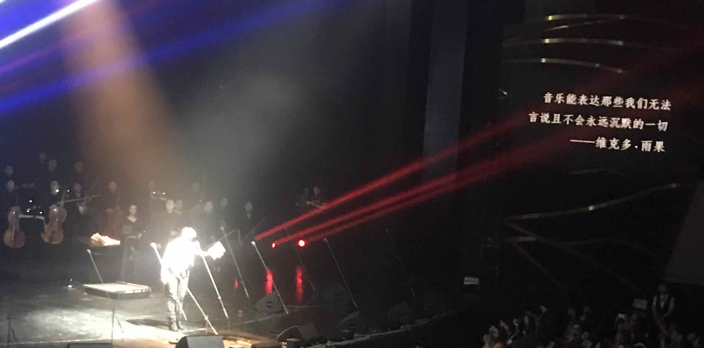

我好像正好半年没有写东西了。哦不，我其实写了一些。仔细看我的书的人可能发现，那第一章其实悄悄更新了很多次。但我意识到了问题，我似乎没有动力完成这本书。嗯，我似乎是一个以半途而废著称的人。我从来不觉得必须从头到尾做完什么，除非我一直认为那是正确的方向。
首先的问题是，写作这本书起初并没有良好的动机。我的意思是，当初想写这本书是出于对现状的“不满”，或者说是：恨。相对于爱，恨不是一个好的动机。
我的老师 Dan Friedman 写了那么多本“小人书”，每一本都精辟而深刻，专注于一个他当时热爱的主题：函数式编程，逻辑式编程，自动定理证明……
跟他相比，我自愧不如，因为我的动机不是出于爱。心中的恨，让我很像 Anakin Skywalker。不管恨是如何产生的，如果任其发展，它将把我变成 Darth Vader。我不想成为 Darth Vader。
动机错了，也就导致了写作这本书的各种困难：设定的目标太高太远，太过注重“精华”，太早的解释过于深刻的原理，语言也啰嗦不流畅，充满了带刺或者负面的字眼…… 我开始担心看了我的书的人会变成什么样子。
我意识到理解一件事和教会别人这件事，是完全不同的难度。如果我不理解人的心理，我就不会成为一个好的老师。如果我的心灵不够清澈，我就写不出纯美的作品。
更要命的是，我的生活里有各种似乎更加有趣而有益的事情。所以每次想要写书，马上就会有有趣的事情来打断我……
因此写书这个事就被我一拖再拖。我的生活应该更加有趣，我想研究一下人的心理，我想成为更好的人。只有当我成为一个很好的人，看我的书的人才会成为更好的人。
但我还不够好。
* * *
过去的几年我都太关心“教”别人什么东西，以老师自居。可是我最近发现，我最爱的事情其实是从别人那里“学”东西。我喜欢跟人聊天讨论，大大的多过自己看书。经常能体会到“听君一席话，胜读十年书”的道理。当然，我希望对方也有同样的感觉。
总之，这半年我就是在学各种新东西，或者说叫做“修行”。从专家那里学，也从很普通的人那里学。从小说里，电影里，音乐里学。学技术，也学人文。学习和领悟让我快乐。比起把自己封闭在自己的领域和圈子里，写一本旨在“改变现状”的书，学习让我更加快乐。我有了新的朋友和同事，我这才感觉我不再是孤军奋战，感觉新的生活开始了。
如果只是想教会别人东西，我仍然是原来的我。而从别人那里学东西，我就成为“升级版”的我。学习让我有了朋友，朋友让我心里充满了爱，只有爱才是我前进的动力。
* * *
过去的王垠，心中充满了批判，然而世界上有远比批判有效而有益的事情。批判难以达到改进世界的效果，我的价值不可能通过批判而得到实现，而且它会让我失去潜在的朋友。价值的实现只能通过把我的技能，通过友好而快乐的途径作用到现实世界，让世界变得更好。不好的方面应该被忘记，而不是花大力气去批判它们。
过去的王垠，以“天才”自居，天天谈论技术，各种评判；而现在的王垠，更加重视友谊和人性，比较少评判事物。比起冰冷的技术，真心的朋友更加能让我快乐。我希望有更多的朋友，更少的敌人。
有个朋友引用一句林徽因的诗来赞美我：“你是爱，是暖，是希望，你是人间的四月天。” 有点言过其实，不过我会努力达到这个境界，嗯。
除了技术，世界上还有那么多有趣而重要的东西：艺术，文学，音乐，美食…… 它们也越来越多的走进我的生活，让我成为一个更加丰富的人。

我要感谢朋友们。真的朋友就像一面镜子，从你们我认识到了自己的问题，拓展了自己的视野。我会不断改进自己。
我不想再做一个不接地气的神，我的心里对自己的能力没有 pride。我不再是“垠神”，也不要叫我“大神”了。与其让人们崇拜我，畏惧我，恭维我，我更愿意让他们发自内心地喜欢我。我欢迎各种形式的互相学习和交流合作。
虽然不再继续写那本书，我肯定会写技术方面的博文，而且更新会比书频繁很多。写书让我犯困，几个月写不出来一章，还不如写点短的文章分享一下。所以不用为书遗憾，因为专注于一个主题的短文是更加有效而有价值的东西。
上海是一个神奇的城市。这里有很多我喜欢的故事，是一个人杰地灵的地方。自从民国年代，许许多多的传奇故事发生在上海。我希望我在上海也有美好的故事。
最后再次感谢大家的支持。